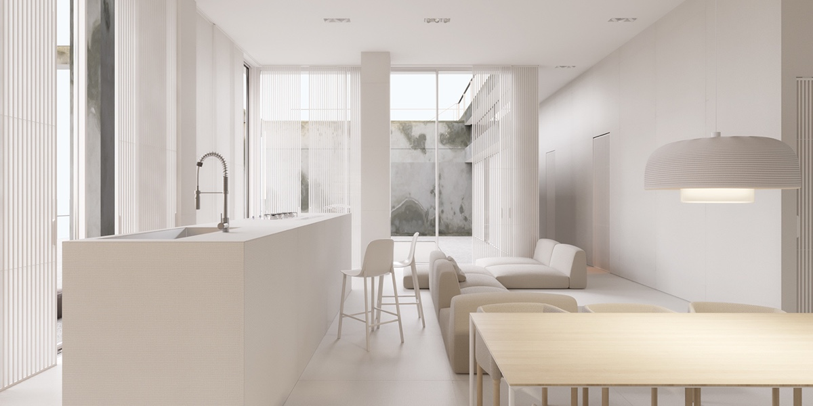
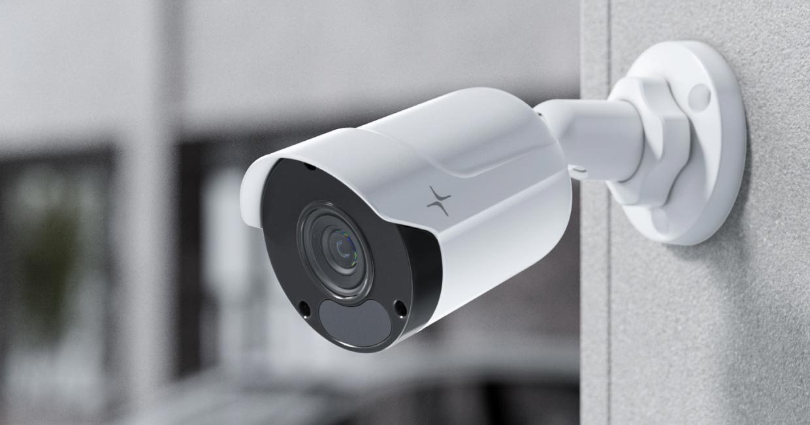
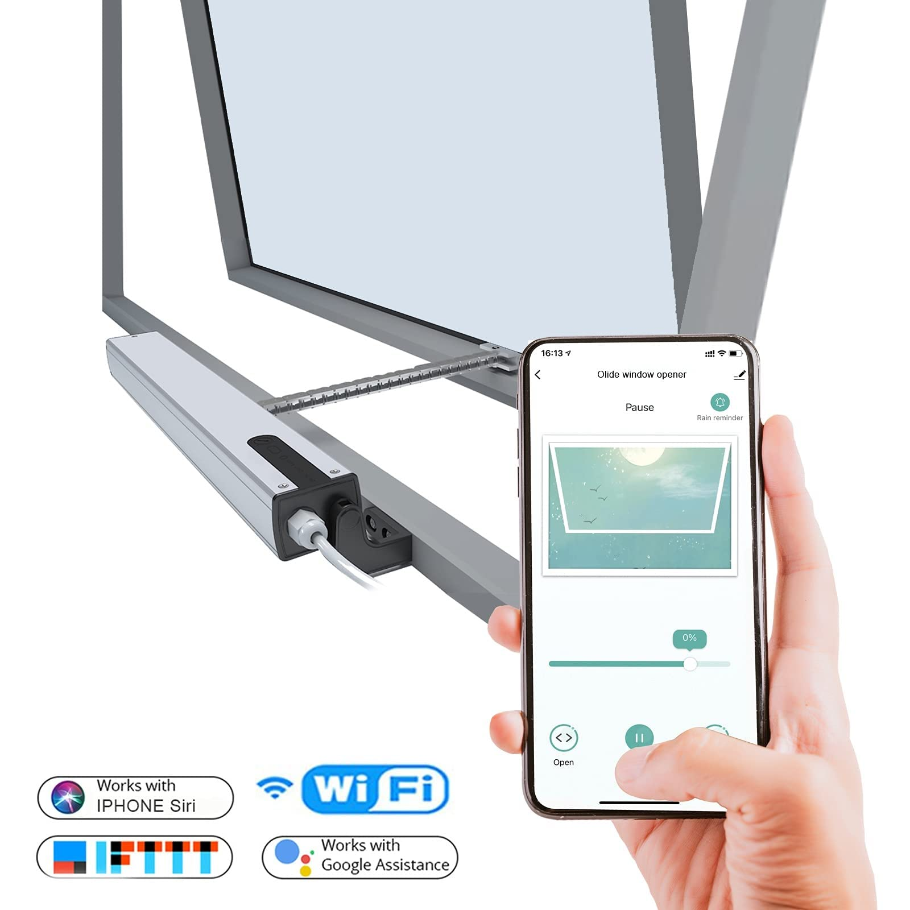

<!DOCTYPE html>
<html lang="en">
    <head>
        <title>Homes Starting a New Beginning</title>
        <link rel="stylesheet" href="styles.css">
    </head>
</html>
<H1>Homes Starting a New Beginning</H1> 

<nav class="navbar"></nav>
    <ul>
    <li><a href="/Figma.home.Html/">Home</a>
    <li><a href="Interior.html/">Interior</a>


<section class="center">
    
</section>
<section class="row"></section>


<section class="row">
    <section class="col half">

        
    </section>
    <section class="col half">
        <P>A nice living room enhances your home’s aesthetic, making it a welcoming space for family and friends. 
        <br>It fosters relaxation and social interaction, serving as a hub for gatherings and activities. 
        <br>A well-designed living room can reflect your personal style and create a positive atmosphere, ultimately contributing to your overall well-being. 
        <br>Plus, it can add value to your home, making it more appealing to potential buyers.</P>
    </section>
</section>
    
<section class="row">
    <section class="col half">

        
    </section>
    <section class="col half">

        <P>A nice open space in your living room creates a sense of freedom and airiness, allowing for easier movement and flexibility in arrangement. 
            <br>It promotes natural light, making the area feel brighter and more inviting. 
            <br>An open layout encourages social interaction and connection, making it perfect for gatherings. </P>
    </section>
</section>

   
 


    <p>Motion detection is a technology used in                 
        <br>various applications to identify movement 
        <br> a specified area.</P>


    <P>Cameras can serve many important purposes in various contexts with keeping your home safe. 
            <br>You could also watch from your own phone.</P>


        <P>This new technology lets off sounds and motion sprinklers to scary off unwanted animals. </P>


        <P>They allow direct communication between the brain and external devices, enabling people 
            <br>to control technology with their thoughts.</P>


        <P>With these technology it allows all the memory from the house records to be recorded.</P>


        <P>With these automatic windows you can let open sun light or have a nice breeze without 
                <br>having to get up and open it.</P>


        <P>A nice dining table serves as the centerpiece of your dining area, setting the tone for meals and gatherings. 
    <br>It provides a welcoming space for family and friends to come together, fostering connection and conversation.</P>


        <P>A nice pantry enhances your kitchen's organization and functionality, making meal prep easier and more efficient. 
        <br>It provides ample storage for food, spices, and kitchen supplies, helping to reduce clutter in your kitchen. </P>

    